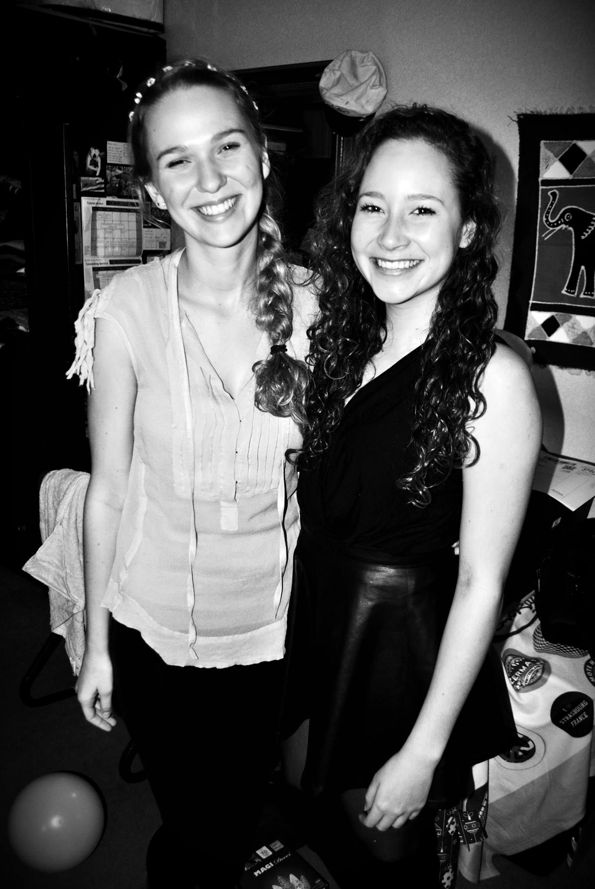
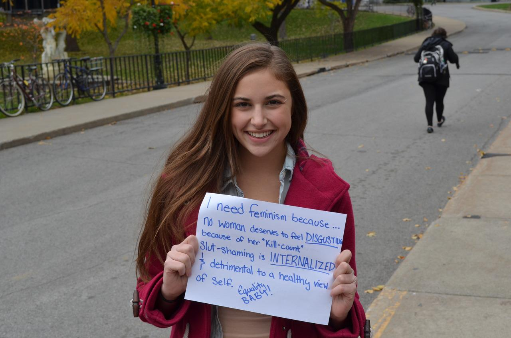
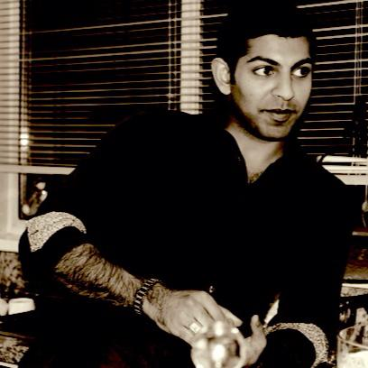
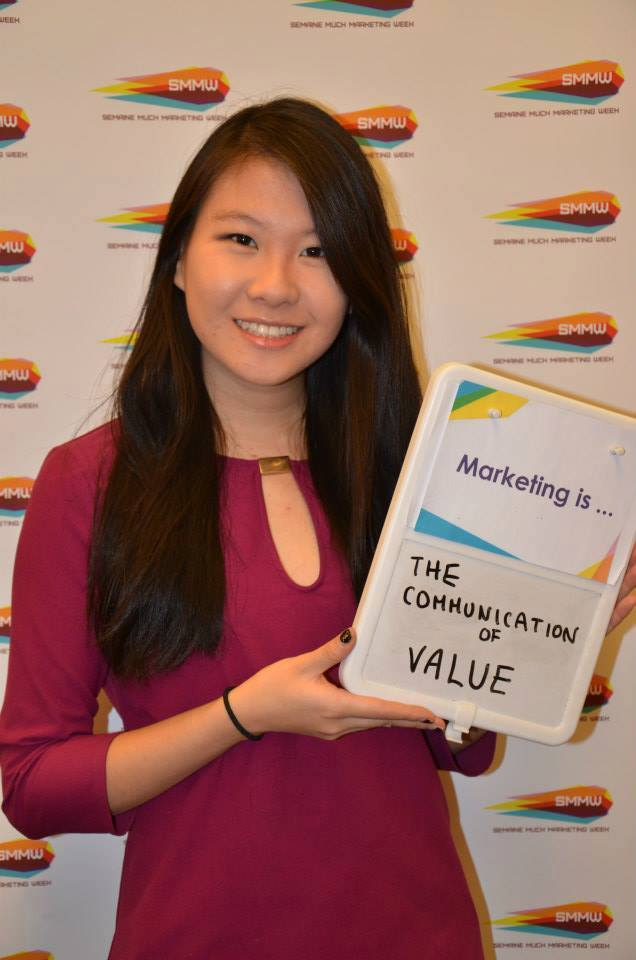
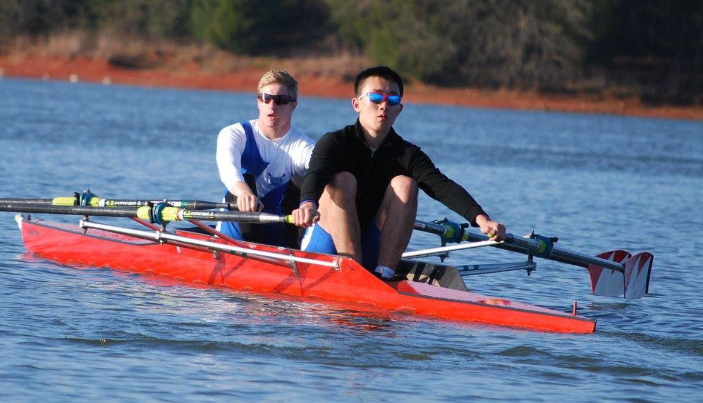

Max Drabkin is a very committed, creative and professional person and you should vote for him to be the VP Communications of the AUS. In the time I've known Max he has surprised me over and over again with his ability to balance school and his extracurricular activities. Working for the Bull and Bear doing video editing, he has done an amazing job capturing the spirit of McGill. Max is a very friendly and approachable person who will be a great team member on the AUS. I have no doubt in my mind that he will do an amazing job.
- Jacob Daniel Chaim
Future SSMU VP Internal
4th year Arts student
Future SSMU VP Internal
4th year Arts student

Max was an amazing frosh leader, I couldn't have hoped for a better frosh experience. My entire group felt included and comfortable, his leadership and charisma was a perfect way to be introduced to the dynamic McGill community. I have no doubt that max will be a successful VP communications and show the same dedication to this position as he did my frosh group.
- Cassie Lee

If Max is anything- it's enthusiastic. He brings passion and a smile to each project he attempts to tackle, while maintaining a determined and focused attitude. This combination is sure to guarantee success and a great year for AUS if he's elected.
- Rebecca Suggit

I have had the distinct pleasure of working with Max on several projects over the past year. I am struck by his ability and willingness to take on leadership roles and build strong relationships with the people he works with. He has a great affinity for motivating and organizing a group of people to achieve a wide variety of goals and I believe his skill set and experiences make him an ideal candidate for the AUS VP Communications position.
- Zain Alimohamed

When we interviewed Max, we just knew we had to have him on our team. He was enthusiastic, showed immense work ethic and commitment, and brought value-added skills to the table. Throughout the year, he has flawlessly followed through on all his responsibilities while taking on new initiatives. I have no doubt that as VP Communications of the AUS, Max will be fully able to perform his tasks, add value to it, keep the AUS President up to date, and cater to the needs of all members of the Arts Undergraduate Society.
- Eileen Chen
President of the Management Marketing Network
4th year Management Student
President of the Management Marketing Network
4th year Management Student

Max Drabkin is a very up–beat and outgoing person. During Frosh, Max was great at making sure that everyone felt included and really transmitted his enthusiasm to the group. He is a natural leader, and a great person to be around
- Alex Magder